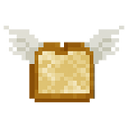

featheredtoast
Jeff Wong
3 posts
Recent Posts
-
Moonclaw Theme port
Theme 2020-05-08 04:49 Post #11Try it now github.com/featheredtoast/discourse-moonclaw-theme FIX: remove custom padding from reply buttons committed 04:48AM - 08 May 20 UTC featheredtoast +0 -4 -
Moonclaw Theme port
Theme 2020-04-29 22:51 Post #9It’s me you want - Johani doesn’t even have access to my theme! If you could get it to target just the buttons on the d-editor-button-bar class, I’d take the change. Otherwise, you would lose all the border stylings everywhere! -
Moonclaw Theme port
Theme 2017-05-16 19:27 Post #1I got around to porting an old favorite phpbb theme this weekend for my forum, for nostalgia’s sake. I’ve cleaned it up and thought I’d share it here - Let me know what you guys think! Installation: Add https://github.com/featheredtoast/discourse-moonclaw-theme to your themes, and picking...